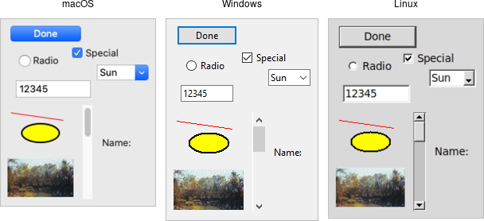

With your first example behind you, you now have a basic idea of what a Tk program looks like and the type of code you need to write to make it work. In this chapter, we'll step back and look at three broad concepts that you need to know to understand Tk: widgets, geometry management, and event handling.
Widgets are all the things that you see onscreen. In our example, we had a button, an entry, a few labels, and a frame. Others are things like checkboxes, tree views, scrollbars, text areas, and so on. Widgets are often referred to as "controls." You'll also sometimes see them referred to as "windows," particularly in Tk's documentation. This is a holdover from its X11 roots (under that terminology, both your toplevel application window and things like a button would be called windows).
Here is an example showing some of Tk's widgets, which we'll cover individually shortly.

Several Tk Widgets.
Widgets are objects, instances of classes that represent buttons, frames, and so on. When you want to create a widget, the first thing you'll need to do is identify the specific class of the widget you'd like to instantiate. This tutorial and the widget roundup will help with that.
Each separate widget is a Python object. When instantiating a widget, you must pass its parent as a
parameter to the widget class. The only exception is the "root" window,
which is the toplevel window that will contain everything else. That is automatically created when you instantiate Tk.
It does not have a parent. For example:
root = Tk() content = ttk.Frame(root) button = ttk.Button(content)
Whether or not you save the widget object in a variable is entirely up to you, depending on whether you'll need to refer to it later. Because the object is inserted into the widget hierarchy, it won't be garbage collected even if you don't keep your own reference to it.
All widgets have several configuration options. These control how the widget is displayed or how it behaves.
The available options for a widget depend upon the widget class, of course. There is a lot of consistency
between different widget classes, so options that do pretty much the same thing tend to be named the same.
For example, both a button and a label have a text option to adjust the text that the widget displays, while a
scrollbar would not have a text option since it's not needed. Similarly, the
button has a command option telling it what to do when pushed, while a label, which holds just
static text, does not.
Configuration options can be set when the widget is first created by specifying their names and values as optional parameters. Later, you can retrieve the current values of those options, and with a very small number of exceptions, change them at any time.
If you're not sure what configuration options a widget supports, you can ask the widget to describe them. This gives you a long list of all its options.
This is all best illustrated with the following interactive dialog with the interpreter.
% python
>>> from tkinter import *
>>> from tkinter import ttk
>>> root = Tk()
create a button, passing two options:
>>> button = ttk.Button(root, text="Hello", command="buttonpressed")
>>> button.grid()
check the current value of the text option:
>>> button['text']
'Hello'
change the value of the text option:
>>> button['text'] = 'goodbye'
another way to do the same thing:
>>> button.configure(text='goodbye')
check the current value of the text option:
>>> button['text']
'goodbye'
get all information about the text option:
>>> button.configure('text')
('text', 'text', 'Text', '', 'goodbye')
get information on all options for this widget:
>>> button.configure()
{'cursor': ('cursor', 'cursor', 'Cursor', '', ''), 'style': ('style', 'style', 'Style', '', ''),
'default': ('default', 'default', 'Default', <index object at 0x00DFFD10>, <index object at 0x00DFFD10>),
'text': ('text', 'text', 'Text', '', 'goodbye'), 'image': ('image', 'image', 'Image', '', ''),
'class': ('class', '', '', '', ''), 'padding': ('padding', 'padding', 'Pad', '', ''),
'width': ('width', 'width', 'Width', '', ''),
'state': ('state', 'state', 'State', <index object at 0x0167FA20>, <index object at 0x0167FA20>),
'command': ('command', 'command' , 'Command', '', 'buttonpressed'),
'textvariable': ('textvariable', 'textVariable', 'Variable', '', ''),
'compound': ('compound', 'compound', 'Compound', <index object at 0x0167FA08>, <index object at 0x0167FA08>),
'underline': ('underline', 'underline', 'Underline', -1, -1),
'takefocus': ('takefocus', 'takeFocus', 'TakeFocus', '', 'ttk::takefocus')}
As you can see, for each option, Tk will show you the name of the option and its current value (along with three other attributes which you won't normally need to worry about).
Tk exposes a treasure trove of information about each and every widget that your application can take advantage of.
Much of it is available via the winfo facility; see the see the winfo command reference
for full details.
This short example traverses the widget hierarchy, using each widget's winfo_children method to identify any child widgets
that need to examined. For each widget, we print some basic information, including it's class (button, frame, etc.), it's width and height,
and it's position relative to it's parent.
def print_hierarchy(w, depth=0):
print(' '*depth + w.winfo_class() + ' w=' + str(w.winfo_width()) + ' h=' + str(w.winfo_height()) + ' x=' + str(w.winfo_x()) + ' y=' + str(w.winfo_y()))
for i in w.winfo_children():
print_hierarchy(i, depth+1)
print_hierarchy(root)
The following are some of the most useful methods:
winfo_class:TButton for a themed buttonwinfo_children:winfo_parent:winfo_toplevel:winfo_width, winfo_height:winfo_reqwidth, winfo_reqheight:winfo_x, winfo_y:winfo_rootx, winfo_rooty:winfo_vieweable:If you've been running code interactively, you've probably that just by creating widgets, they didn't appear onscreen. Placing widgets onscreen, and precisely where they are placed, is a separate step called geometry management.
In our example, positioning each widget was accomplished by the grid command. We specified the column and row we
wanted each widget to go in, how things were to be aligned within the grid, etc. Grid is an example of a
geometry manager (of which there are several in Tk, grid being the most useful).
For now, we'll look at geometry management in general; we'll talk about grid in a later chapter.
A geometry manager's job is to figure out exactly where those widgets are going to be put. This turns out to be a complex
optimization problem, and a good geometry manager relies on quite sophisticated algorithms. A good geometry
manager provides the flexibility, power, and ease of use that makes programmers happy. It also makes it easy to create good looking user interface layouts without needing to jump through hoops. Tk's grid is, without
a doubt, one of the absolute best. A poor geometry manager... well, all the Java programmers who have suffered
through "GridBagLayout" please raise their hands.
We'll go into more detail in a later chapter, but grid was introduced several years after Tk became popular.
Before that, an older geometry manager named pack was most commonly used. It's very powerful, but is much harder to use,
and makes it extremely difficult to create layouts that look appealing today. Unfortunately, much of the example Tk code and documentation out
there uses pack instead of grid (a good clue to how current it is). The widespread use of pack is one major reason that so many Tk user interfaces look terrible. Start new code with grid, and upgrade old code when you can.
The problem for a geometry manager is to take all the different widgets the program creates, plus the program's instructions for where in the window each should go (explicitly, or more often, relative to other widgets), and then actually position them in the window.
In doing so, the geometry manager has to balance multiple constraints. Consider these situations:
Geometry management in Tk relies on the concept of master and slave widgets. A master is a widget, typically a toplevel application window or a frame, which contains other widgets, called slaves. You can think of a geometry manager taking control of the master widget and deciding how all the slave widgets will be displayed within.
Your program tells the geometry manager what slaves to manage within the master, i.e., via calling grid. Your program also
provides hints as to how it would like each slave to be displayed, e.g., via the column and row options.
You can also provide other things to the geometry manager. For example, we used columnconfigure and rowconfigure to indicate
the columns and rows we'd like to expand if there is extra space available in the window. It's worth noting that all these
parameters and hints are specific to grid; other geometry managers would use different ones.
The geometry manager takes all the information about the slaves in the master, as well as information about how large the master
is. It then asks each slave widget for its natural size, i.e., how large it would ideally like to be displayed. The geometry manager's internal algorithm calculates the area each slave will be allocated (if any!). The slave is then
responsible for rendering itself within that particular rectangle. And of course, any time the size of the master changes
(e.g., because the toplevel window was resized), the natural size of a slave changes (e.g., because we've changed the
text in a label), or any of the geometry manager parameters change (e.g., like row, column, or sticky) we repeat
the whole thing.
This all works recursively as well. In our example, we had a content frame inside the toplevel application window, and then several other widgets inside the content frame. We, therefore, had to manage the geometry for two different masters. At the outer level, the toplevel window was the master, and the content frame was its slave. At the inner level, the content frame was the master, with each of the other widgets being slaves. Notice that the same widget, e.g., the content frame, can be both a master and a slave! As we saw previously, this widget hierarchy can be nested much more deeply.
Tk, as with most other user interface toolkits, runs an event loop that receives events from the operating system. These are things like button presses, keystrokes, mouse movement, window resizing, and so on.
Generally, Tk takes care of managing this event loop for you. It will figure out what widget the event applies to (did a user click on this button? if a key was pressed, which textbox had the focus?), and dispatch it accordingly. Individual widgets know how to respond to events; for example, a button might change color when the mouse moves over it, and revert back when the mouse leaves.
It's critical in event-driven applications that the event loop not be blocked. The event loop should run continuously, normally executing dozens of steps per second. At every step, it processes an event. If your program is performing a long operation, it can potentially block the event loop. In that case, no events would be processed, no drawing would be done, and it would appear as if your application is frozen. There are many ways to avoid this happening, mostly related to the structure of your application. We'll discuss this in more detail in a later chapter.
You often want your program to handle some event in a particular way, e.g., do something when a button is
pushed. For those events that are most frequently customized (what good is a button without something
happening when you press it?), the widget will allow you to specify a callback as a widget configuration option.
We saw this in the example with the command option of the button.
def calculate(*args):
...
ttk.Button(mainframe, text="Calculate", command=calculate)
Callbacks in Tk tend to be simpler than in user interface toolkits used with compiled languages (where a callback must be a procedure with a certain set of parameters or an object method with a certain signature). Instead, the callback is just an ordinary bit of code that the interpreter evaluates. While it can be as complicated as you want to make it, most of the time, you'll just want your callback to call some other procedure.
For events that don't have a widget-specific command callback associated with them, you can use Tk's bind to capture any
event, and then (like with callbacks) execute an arbitrary piece of code.
Here's a (silly) example showing a label responding to different events. When an event occurs, a description of the event is displayed in the label.
from tkinter import *
from tkinter import ttk
root = Tk()
l =ttk.Label(root, text="Starting...")
l.grid()
l.bind('<Enter>', lambda e: l.configure(text='Moved mouse inside'))
l.bind('<Leave>', lambda e: l.configure(text='Moved mouse outside'))
l.bind('<ButtonPress-1>', lambda e: l.configure(text='Clicked left mouse button'))
l.bind('<3>', lambda e: l.configure(text='Clicked right mouse button'))
l.bind('<Double-1>', lambda e: l.configure(text='Double clicked'))
l.bind('<B3-Motion>', lambda e: l.configure(text='right button drag to %d,%d' % (e.x, e.y)))
root.mainloop()
The first two bindings are pretty straightforward, just watching for simple events.
An <Enter> event means the mouse has moved over top the widget, while the <Leave> event is
generated when the mouse moves outside the widget to a different one.
The next binding looks for a mouse click, specifically a <ButtonPress-1> event. Here,
the <ButtonPress> is the actual event, but the -1 is an event detail specifying the left (main)
mouse button on the mouse. The binding will only trigger when a <ButtonPress> event is generated involving
the main mouse button. If another mouse button was clicked, this binding would ignore it.
This next binding looks for a <3> event. This is actually a shorthand for <ButtonPress-3>.
It will respond to events generated when the right mouse button is clicked. The next binding, <Double-1>
(shorthand for <Double-ButtonPress-1>) adds another modifier,
Double, and so will respond to the left mouse button being double clicked.
The last binding also uses a modifier: capture mouse movement (Motion), but only when the right
mouse button (B3) is held down. This binding also shows an example of how to use event
parameters. Many events, such as mouse clicks or movement carry additional information like the current position of the
mouse. Tk provides access to these parameters in Tcl callback scripts through the use of percent substitutions.
These percent substitutions let you capture them so they can be used in your script.
Tkinter abstracts away these percent substitutions and instead encapsulates all the event parameters in an event object.
Above, we used the x and y fields to retrieve the mouse position. We'll see percent substitutions used
later in another context, entry widget validation.
What's with the lambda expressions?
Tkinter expects you to provide a function as the event callback, whose first argument is an event object
representing the event that triggered the callback. It's sometimes not worth the bother of defining regular
named functions for one-off trivial callbacks such as in this example. Instead, we've just used Python's anonymous
functions via lambda. In real applications, you'll almost always use a regular function, such as the
calculate function in our feet to meters example, or a method of an object.
We've just seen how event bindings can be set up for an individual widget. When a matching event is received by that widget, the binding will trigger. But that's not all you can do.
Your binding can capture not just a single event, but a short sequence of events. The <Double-1> binding
triggers when two mouse clicks occur in a short time. You can do the same thing to capture two keys pressed in a row,
e.g., <KeyPress-A><KeyPress-B> or simply <ab>.
You can also set up an event binding on a toplevel window. When a matching event occurs anywhere in that window, the binding will be triggered. In our example, we set up a binding for the Return key on the main application toplevel window. If the Return key was pressed when any widget in the toplevel window had the focus, that binding would fire.
Less commonly, you can create event bindings that are triggered when a matching event occurs anywhere in the application, or even for events received by any widget of a given class, e.g., all buttons.
More than one binding can fire for an event. This keeps event handlers concise and limited in scope, meaning more modular code.
For example, the behavior of each widget class in Tk is itself defined with script-level event bindings. These stay separate from event bindings in your application.
Event bindings can also be changed or deleted. They can be modified to alter event handling
for widgets of a certain class or parts of your application. You can reorder, extend, or change the sequence
of event bindings that will be triggered for each widget;
see the bindtags command reference if you're curious.
The most commonly used events are described below, along with the circumstances when they are generated.
Some are generated on some platforms and not others.
For a complete description of all the different event names,
modifiers, and the different event parameters that are available with each, the best place to look is the
bind command reference.
<Activate>:<Deactivate>:<MouseWheel>:<KeyPress>:<KeyRelease>:<ButtonPress>:<ButtonRelease>:<Motion>:<Configure>:<Destroy>:<FocusIn>:<FocusOut>:<Enter>:<Leave>:Event detail for mouse events are the button that was pressed, e.g. 1, 2, or 3.
For keyboard events, it's the specific key, e.g. A, 9, space, plus,
comma, equal. A complete list can be found in the
keysyms command reference.
Event modifiers for include, e.g. B1 or Button1 to signify the main mouse button being held down,
Double or Triple for sequences of the same event. Key modifiers for when keys on the keyboard are
held down inline Control, Shift, Alt, Option, and Command.
The events we've seen so far are low-level operating system events like mouse clicks and window resizes.
Many widgets also generate higher level or semantic events called virtual events. These are indicated
by double angle brackets around the event name, e.g., <<foo>>.
<foo>.
For example, a listbox widget will
generate a <<ListboxSelect>> virtual event whenever its selection changes. The same virtual event is generated
whether a user clicked on an item, moved to it using the arrow keys, or some other way. Virtual events
avoid the problem of setting up multiple, possibly platform-specific event bindings to capture
common changes. The available virtual events for a widget will be listed in the documentation
for the widget class.
Tk also defines virtual events for common operations that are triggered in different ways for different platforms.
These include <<Cut>>, <<Copy>> and <<Paste>>.
You can define your own virtual events, which can be specific to your application. This can be a useful way to keep platform-specific details isolated in a single module, while you use the virtual event throughout your application. Your own code can generate virtual events that work in exactly the same way that virtual events generated by Tk do.
root.event_generate("<<MyOwnEvent>>")